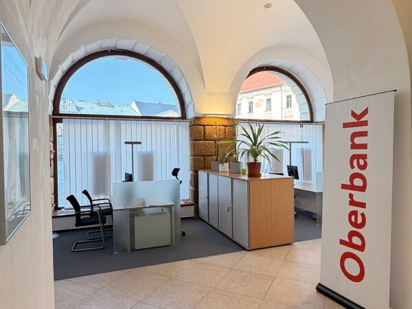
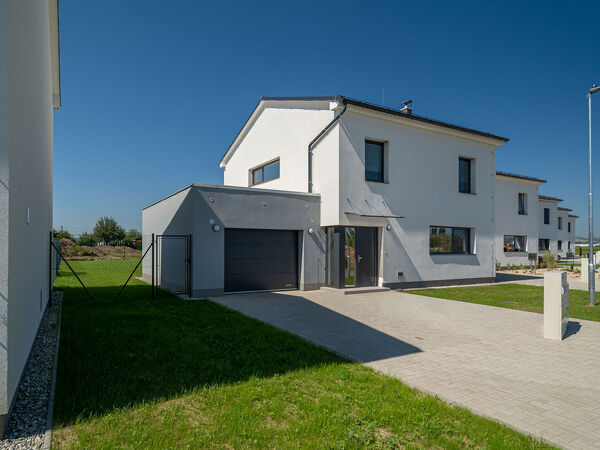
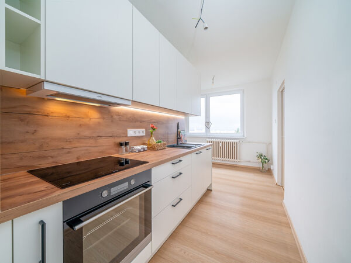
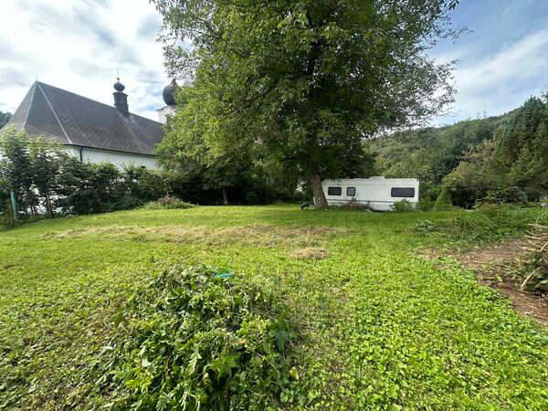

Pronájem útulného bytu 2+kk
Olomouc, ul. Kpt. Nálepky
Přízemní nezařízený byt v Olomouci. Vhodný pro jednotlivce nebo pár, kteří hledají útulné bydlení v dobře dostupné lokalitě.
14 000 Kč / měsíc
Zobrazit detail
Pronájem stylového bytu 3+1, 76 m²
Šternberk – Dolní Žleb
Stylový byt s lodžií, garáží a zahrádkou. Nabídka působí vhodně pro klienty, kteří hledají příjemné bydlení s praktickým zázemím.
17 200 Kč / měsíc
Zobrazit detail
Pronájem exkluzivních komerčních prostor, 204,5 m²
Olomouc, centrum
Reprezentativní komerční prostory v 1. NP v centru Olomouce. Vhodné pro kanceláře, služby nebo firemní zázemí.
150 000 Kč / měsíc
Zobrazit detail
Pronájem RD 4+kk, 183 m²
Moravičany, okr. Šumperk
Rodinný dům s pozemkem 507 m² a garáží. Prostorná nabídka pro klienty, kteří hledají komfortní bydlení mimo centrum města.
24 000 Kč / měsíc
Zobrazit detail
Pronájem bytu 2+1 po rekonstrukci, 53 m²
Olomouc, Neředín, ul. Jílová
Byt po rekonstrukci v 7. patře. Praktická dispozice 2+1 a dobrá dostupnost v oblíbené části Olomouce.
16 000 Kč / měsíc
Zobrazit detail
Pronájem bytu 2+kk, 76 m²
Olomouc, Ostružnická ul., centrum
Prostorný byt ve 2. patře v centru Olomouce. Nabídka vhodná pro bydlení nebo reprezentativní městské zázemí.
17 000 Kč / měsíc
Zobrazit detail
Pronájem zařízených kancelářských prostor, 200 m²
Olomouc, Holická ul.
Zařízené kancelářské prostory v 1. patře. Vhodné pro firmu, služby, administrativu nebo zázemí podnikání.
45 000 Kč / měsíc
Zobrazit detail
Místo pro chalupu v srdci Vernířovic
Vernířovice, okr. Šumperk
Pozemek o velikosti 799 m² v centru obce Vernířovice. Nabídka vhodná pro chalupu, rekreaci nebo klidné zázemí v Jeseníkách.
2 200 000 Kč
Zobrazit detail
Prodej pozemku pro bydlení, 3 462 m²
Podolí u Bouzova, okr. Olomouc
Rovinatý pozemek na okraji obce, v územním plánu téměř celý zahrnutý pro rodinné bydlení. Lze jej využít pro stavbu, rekreaci, zahradničení nebo jako investici.
580 Kč / m²
Zobrazit detail